| Nome completo | RM |
|---|---|
| Camila do Prado Padalino | 98316 |
| Felipe Cavalcante Bressane | 97688 |
| Gabriel Teixeira Machado | 551570 |
| Campo | Pátio Monitor |
|---|---|
| Nome do produto | Pátio Monitor |
| Cidadão e território | O passageiro que espera na plataforma e o controlador de terminais e garagens de ônibus em São Paulo. O Terminal Pirituba é o cenário de referência. |
| Problema | Escala, portaria e rastreamento não concordam sobre onde está cada ônibus, e o controlador decide sem saber se o veículo está fora, manobrando ou foi trocado. |
| Proposta de valor | Uma visão única do pátio que cruza o previsto com o registrado e aponta pendências enquanto ainda dá tempo de agir. |
| Arquitetura | Front web, API do produto, pipeline de dados (Airflow → Databricks, objeto deste relatório), Smart Bus Gate (ESP32), automação RPA no n8n, assistente de IA e detector de visão, publicados por CI/CD no Azure. |
| Fontes de dados | SPTrans Olho Vivo (posições reais), GTFS da SPTrans (viagens previstas), Open-Meteo (clima) e portaria simulada em CSV, com a regra de geração documentada. |
| Modelos de IA | Assistente do controlador com LLM e RAG, YOLO para veículos no pátio e o modelo de Machine Learning do Smart Bus Gate. |
| URL do MVP e repositório | patio-monitor-gs-97688.azurewebsites.net · github.com/FeBressane/patio-monitor-bigdata |
| Indicadores de impacto | Porcentagem de partidas no horário, tempo para localizar um veículo, saídas sem confirmação por dia e tempo médio de permanência. |
| ODS | ODS 11 (meta 11.2, transporte público acessível e eficiente) e ODS 9 (infraestrutura e inovação). |
O componente Dados coleta as posições reais dos ônibus em volta do Terminal Pirituba, trata tudo em camadas Bronze → Prata → Ouro no Databricks e entrega ao produto a tabela de permanência que o controlador vê. Ele responde a quatro perguntas:
Figura 1. O Databricks Free Edition não se conecta ao Airflow, então os arquivos de chegada/ sobem ao Volume pela interface, em lotes de dias diferentes.
| Fonte | Origem | Formato | Frequência |
|---|---|---|---|
| Posições dos ônibus | API SPTrans Olho Vivo (/Posicao, token gratuito), filtrada num raio de 1,5 km do Terminal Pirituba | JSON | De hora em hora |
| Viagens previstas | GTFS da SPTrans (trips, stop_times, routes), base aberta baixada no portal de desenvolvedores | CSV | Diária |
| Clima | API Open-Meteo (chuva e temperatura por hora, sem chave), usada para cruzar chuva com atraso | JSON | Diária |
| Portaria e escala | Simuladas a partir das posições reais, com regra e semente fixas (scripts/gerar_portaria.py) | CSV | Diária |
Por que simular a portaria: não temos acesso à portaria nem à escala de uma garagem real, e o GTFS diz quais viagens existem, mas não qual ônibus faz cada uma. O gerador parte dos ônibus que o GPS viu perto do pátio e aplica ruído documentado: 8% sem saída, 5% de veículo trocado, 5% de vaga errada, 2% de saída antes da entrada e motoristas fictícios.
Três fontes reais (duas APIs públicas, Olho Vivo e Open-Meteo, e uma base aberta, o GTFS) e uma simulada com regra documentada. Todas são do problema: o Olho Vivo diz onde o ônibus está, o GTFS diz o que estava previsto e a portaria diz o que foi registrado.
Os arquivos das quatro fontes no Volume aparecem na Figura 3 (requisito 04).
O DAG patio_coleta (dags/patio_coleta.py) roda @hourly com catchup=False, porque a Olho Vivo só devolve a posição atual e não tem histórico. Cada coleta grava um arquivo em chegada/ com data e hora no nome, como olhovivo_20261113_2000.json. GTFS e clima são fontes diárias: a tarefa confere se o arquivo do dia já existe e, se existir, é pulada.
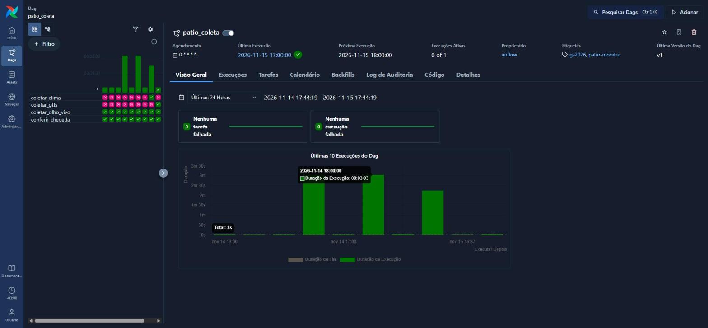
patio_coleta: agendamento 0 * * * * (de hora em hora), nenhuma tarefa ou execução falhada nas últimas 24 h e, à esquerda, a grade (Grid) com as execuções concluídas.[coletar_olho_vivo(), coletar_gtfs(), coletar_clima()] >> conferir_chegada()
As três coletas rodam em paralelo, e conferir_chegada confere que o arquivo da Olho Vivo daquela coleta chegou e não está vazio, lista os demais arquivos do horário e falha se algo faltar. O token da SPTrans fica na Variable sptrans_token, que chega ao contêiner pelo .env (fora do Git), e aparece como *** nos logs. Toda tarefa tem 2 novas tentativas e um on_failure_callback, que registra a falha no log e, se a Variable alerta_webhook_url existir, envia a notificação a um webhook.
As Variables entram no Airflow como variáveis de ambiente AIRFLOW_VAR_*, que o Airflow lê sem gravar no banco. Por isso não aparecem em Admin › Variables, e o valor nunca fica visível na interface:
# airflow/docker-compose.yml (o valor vem do .env, que fica fora do Git)
AIRFLOW_VAR_SPTRANS_TOKEN: ${SPTRANS_TOKEN:?defina SPTRANS_TOKEN no .env}
AIRFLOW_VAR_GTFS_ZIP_URL: /opt/airflow/gtfs/gtfs.zip
# dags/patio_coleta.py
s.post(f"{OLHO_VIVO}/Login/Autenticar", params={"token": Variable.get("sptrans_token")}, timeout=20)
Os arquivos subiram pela interface para /Volumes/workspace/patio/chegada em dois lotes de dias de coleta diferentes:
| Lote | Dia de coleta | Arquivos |
|---|---|---|
| 1 | 13/11/2026 | 5 × olhovivo_20261113_*, clima_20261113_2000, portaria e escala geradas com o dia 13 |
| 2 | 14 e 15/11/2026 | 23 × olhovivo_20261114_* e olhovivo_20261115_*, clima_20261114_0000 e clima_20261115_1600, gtfs_trips, gtfs_stop_times e gtfs_routes de 15/11 e portaria e escala regeradas com todos os dias (30 arquivos) |
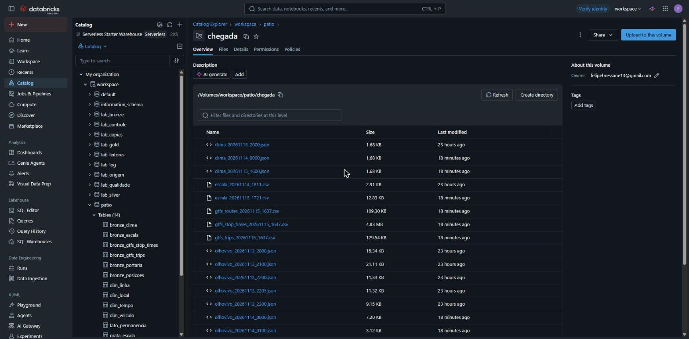
/Volumes/workspace/patio/chegada: arquivos do lote 1 ("23 hours ago") e do lote 2 ("18 minutes ago"), com as quatro fontes (clima, escala, GTFS, Olho Vivo e portaria).databricks/01_bronze.py usa um COPY INTO por fonte, com PATTERN e as colunas arquivo_origem e ingerido_em. O COPY INTO guarda quais arquivos já carregou: no 2º lote só os novos entram, e rodar de novo não duplica. Fonte sem arquivo no Volume é pulada com aviso. As contagens antes e depois estão na seção 07.
databricks/02_prata.py converte os tipos (to_timestamp, CAST de lat/lon para DOUBLE), trata nulos e aplica três regras de qualidade, contando o total barrado por cada uma:
| Regra | O que barra | Tabela | Barradas |
|---|---|---|---|
| R1 | Coordenada nula ou fora do raio de 250 m do pátio (distância haversine) | posições | 1.136 |
| R2 | Prefixo nulo ou fora do formato de 5 dígitos | posições e portaria | 0 |
| R3 | Saída registrada antes da entrada | portaria | 4 |
Leitura: a R1 barra a maior parte das posições porque a coleta usa um raio de 1,5 km, para pegar os ônibus que se aproximam, e a Prata só guarda o que está dentro do pátio (250 m). Das 1.310 posições da Bronze, 174 passaram nas regras, e o MERGE deixou 167, porque 7 eram a mesma chave repetida entre coletas. A R3 barrou os 4 registros de portaria com a saída digitada antes da entrada, o erro de 2% que o gerador injeta de propósito. A R2 não barrou nada nesses lotes, porque a Olho Vivo sempre manda o prefixo com 5 dígitos. Ela continua no pipeline como proteção para quando a portaria vier de uma fonte digitada à mão.
As posições válidas entram na prata_posicoes por MERGE pela chave (prefixo_veiculo, data_hora), depois de deduplicar com row_number(). A portaria e a escala ficam com a versão do arquivo mais recente de cada registro_id e viagem_id.
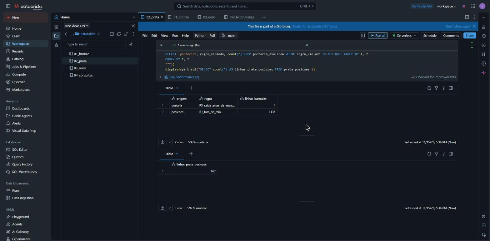
02_prata: linhas barradas por regra (R3 = 4, R1 = 1.136; a R2 não aparece porque barrou 0) e as 167 linhas da prata_posicoes.databricks/03_ouro.py monta um modelo estrela: a fato fato_permanencia (uma linha por viagem prevista, ligada à estadia registrada na portaria) e as dimensões dim_veiculo, dim_linha, dim_tempo e dim_local. Cada viagem recebe um status_conciliacao: ok, atrasada (mais de 5 min), parado_vaga_errada, veiculo_trocado ou saida_sem_confirmacao. As cinco consultas estão na seção 08.
Com os dois lotes, a fato tem 157 viagens: 81 ok, 32 atrasadas, 25 com veículo trocado, 12 com saída sem confirmação e 7 paradas na vaga errada.
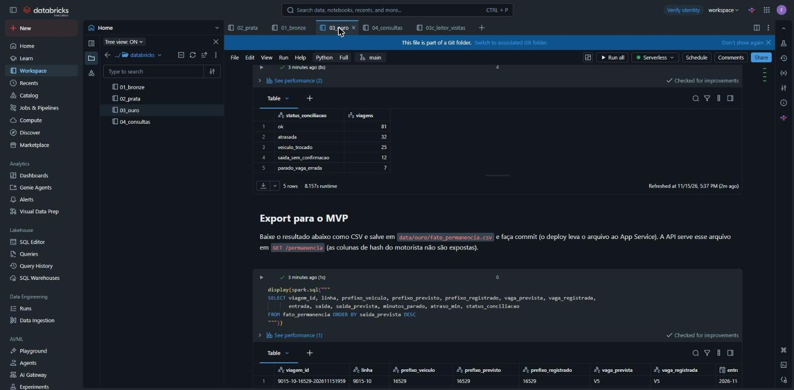
03_ouro: viagens por status de conciliação e o início do export para o MVP.Os únicos dados pessoais do domínio são a matrícula e o nome do motorista, que já são fictícios. Mesmo assim, eles chegam à Ouro só como hash: sha2(matricula_motorista, 256) e sha2(nome_motorista, 256). O texto original não sai da Prata.
O MVP usa a tabela fato_permanencia, exportada sem nenhuma coluna de motorista para data/ouro/fato_permanencia.csv no repositório do MVP. A API a serve em GET /api/permanencia, e a tela do MVP mostra a seção "Permanência no pátio (camada Ouro)".
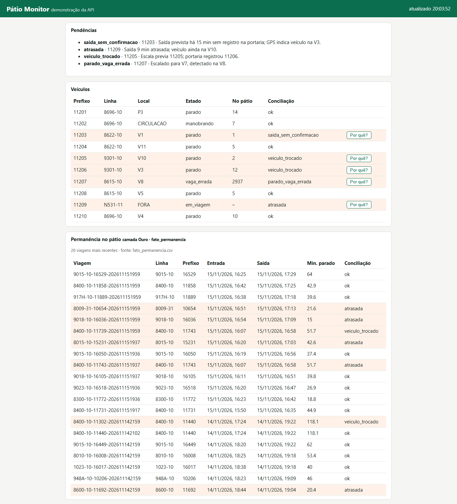
fonte: fato_permanencia.csv), com o status de conciliação e nenhuma coluna de motorista.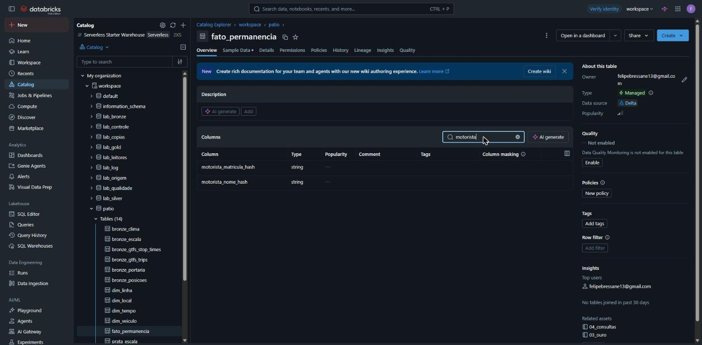
dim_linha, dim_local, dim_tempo, dim_veiculo). Ao filtrar por "motorista", a fato_permanencia só tem as duas colunas em hash, sem nome nem matrícula em texto.O README traz os integrantes, a ficha técnica, o diagrama, as fontes, a tabela de requisitos e o passo a passo para reproduzir. As pastas são dags/, databricks/, amostras/, scripts/, airflow/ e evidencias/. O repositório não tem tokens, senhas nem dados pessoais reais: o .env, o chegada/ e o GTFS ficam fora do Git.
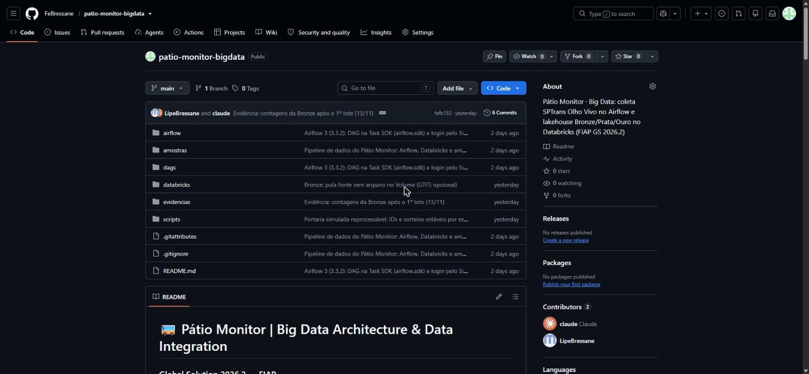
patio-monitor-bigdata, com as pastas e o README.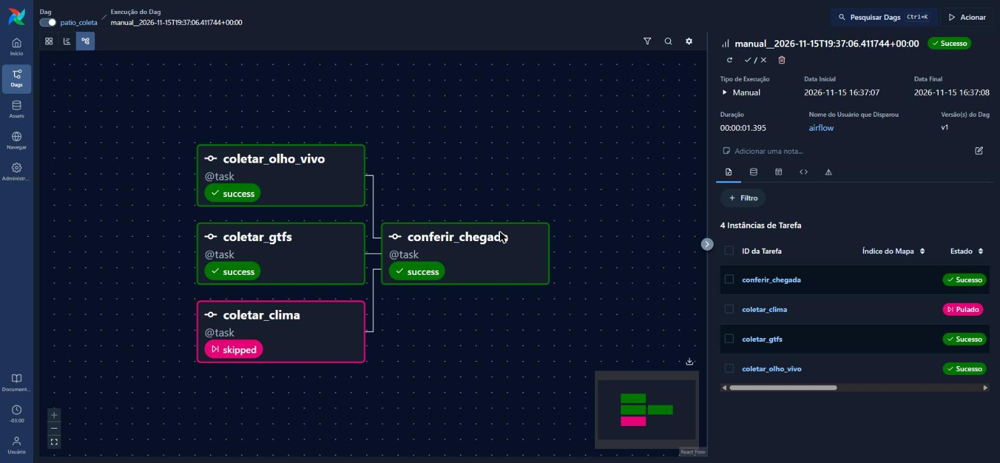
coletar_olho_vivo, coletar_gtfs e coletar_clima rodam em paralelo e só depois roda o conferir_chegada. O clima aparece como skipped porque já tinha sido coletado naquele dia.A visão Grid está na Figura 2 (requisito 02). As colunas mostram as execuções horárias concluídas, com coletar_olho_vivo e conferir_chegada em verde em todas. As caixas rosa (skipped) de GTFS e clima são esperadas: as duas fontes são diárias, então a tarefa só baixa uma vez por dia e pula nas outras horas.
O 01_bronze foi rodado três vezes: depois do 1º lote, depois do 2º lote e de novo sem arquivo novo.
| Tabela | 1ª execução (lote 1) | 2ª execução (lote 2) | 3ª execução (sem arquivo novo) |
|---|---|---|---|
| bronze_posicoes | 0 → 350 | 350 → 1.310 (+960) | 1.310 → 1.310 (0) |
| bronze_portaria | 0 → 35 | 35 → 192 (+157) | 192 → 192 (0) |
| bronze_escala | 0 → 35 | 35 → 192 (+157) | 192 → 192 (0) |
| bronze_gtfs_trips | 0 → 0 | 0 → 2.268 (+2.268) | 2.268 → 2.268 (0) |
| bronze_gtfs_stop_times | 0 → 0 | 0 → 99.056 (+99.056) | 99.056 → 99.056 (0) |
| bronze_clima | 0 → 1 | 1 → 3 (+2) | 3 → 3 (0) |
No 2º lote, só os 30 arquivos novos entraram: os 5 arquivos de posição do dia 13 não foram relidos. Na 3ª execução, sem arquivo novo, nenhuma tabela mudou, o que prova que rodar de novo não duplica. A portaria e a escala do 2º lote foram regeradas com todos os dias, então as 35 estadias do dia 13 reaparecem no arquivo novo com o mesmo registro_id. A Bronze guarda o arquivo como chegou, e a Prata fica com uma linha por registro_id (requisito 06).
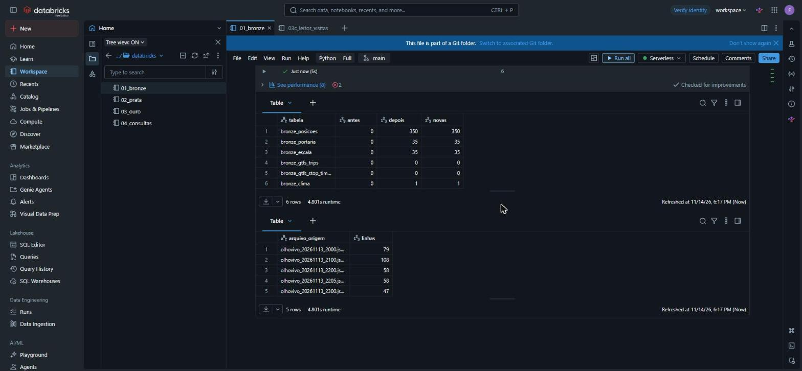
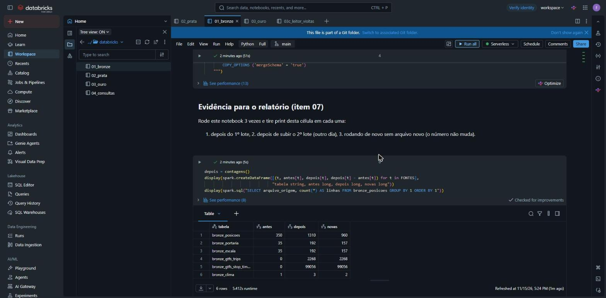
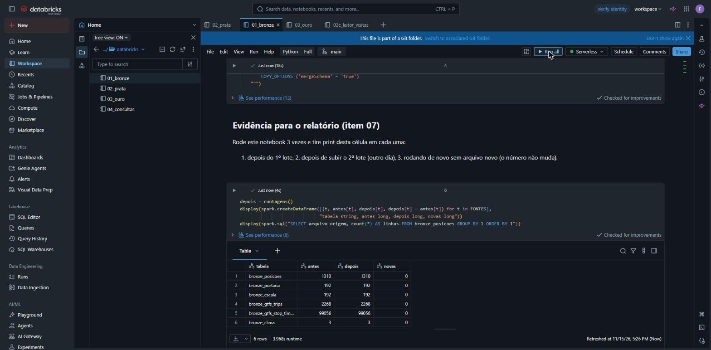
As consultas estão em databricks/04_consultas.sql e rodam sobre workspace.patio.fato_permanencia.
SELECT linha, count(*) AS estadias, round(avg(minutos_parado), 1) AS media_min,
round(percentile_approx(minutos_parado, 0.9), 1) AS p90_min
FROM fato_permanencia WHERE entrada IS NOT NULL
GROUP BY linha ORDER BY media_min DESC;
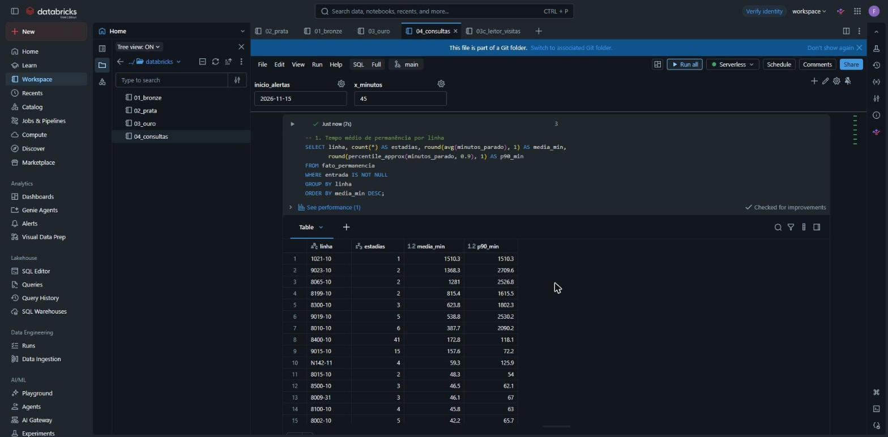
Interpretação: o topo da lista não mostra ônibus que ficam muito tempo no pátio, e sim estadias sem saída registrada. Nelas, minutos_parado conta até agora: a linha 1021-10 tem 1 estadia aberta desde 14/11, com 1.510 min. Nas linhas com estadias fechadas, a permanência típica fica entre 30 e 60 minutos (por exemplo, 8600-10 com 24 estadias e média de 37,8 min, e 917H-10 com 12 estadias e 38,3 min). A 8400-10, linha com mais movimento (41 estadias), tem média de 172,8 min puxada por estadias abertas, mas p90 de 118 min. Ou seja, para medir a permanência operacional é preciso resolver antes as saídas sem confirmação, o que as consultas 2 e 3 apontam.
SELECT data, count_if(status_conciliacao = 'saida_sem_confirmacao') AS sem_confirmacao, count(*) AS viagens,
round(100 * count_if(status_conciliacao = 'saida_sem_confirmacao') / count(*), 1) AS pct
FROM fato_permanencia GROUP BY data ORDER BY data;
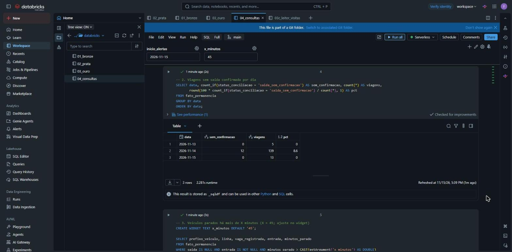
Interpretação: em 14/11, o único dia com coleta completa, foram 12 de 139 viagens (8,6%) sem saída confirmada, perto dos 8% que a regra de simulação injeta. Isso mostra que a conciliação recupera o que foi plantado. Os dias 13/11 (5 viagens, só a noite) e 15/11 (13 viagens, coleta parcial da tarde) ficaram em 0, mas com uma amostra pequena demais para concluir algo.
SELECT prefixo_veiculo, linha, vaga_registrada, entrada, minutos_parado FROM fato_permanencia WHERE saida IS NULL AND entrada IS NOT NULL AND minutos_parado > :x_minutos -- X = 45 ORDER BY minutos_parado DESC;
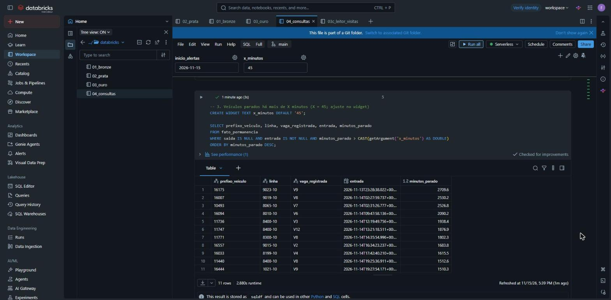
Interpretação: 11 veículos estão sem saída há mais de 45 minutos. O primeiro da lista é o 16175 (linha 9023-10, vaga V9), com entrada em 13/11 às 23h28 e mais de 2.700 minutos sem baixa. Os 11 são estadias com saída sem confirmação que ainda têm entrada registrada. Na prática, é a lista de trabalho do controlador: ou o ônibus está mesmo parado e pode ser liberado para uma viagem, ou saiu sem baixa na portaria e o registro precisa ser corrigido.
SELECT status_conciliacao AS tipo, count(*) AS ocorrencias,
round(100 * count(*) / sum(count(*)) OVER (), 1) AS pct_do_total
FROM fato_permanencia WHERE status_conciliacao <> 'ok'
GROUP BY status_conciliacao ORDER BY ocorrencias DESC;
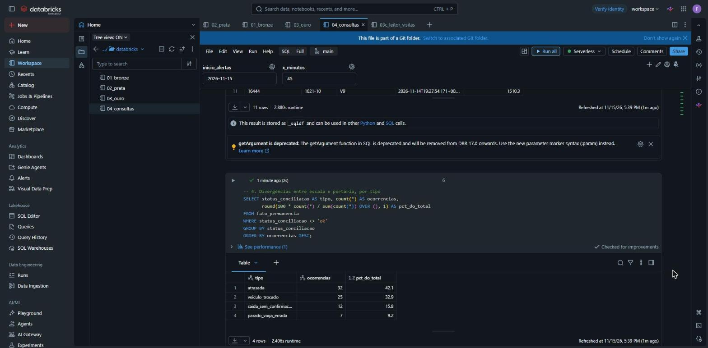
Interpretação: 76 das 157 viagens (48%) têm alguma divergência. A mais comum é o atraso, com 32 casos (42,1% das divergências), seguida de veículo trocado (25; 32,9%), saída sem confirmação (12; 15,8%) e vaga errada (7; 9,2%). O atraso é onde os alertas do MVP mais ajudam. O veículo trocado aparece bem acima dos 5% que o gerador injeta, porque a conciliação liga escala e portaria pela linha e por uma janela de horário: quando dois ônibus da mesma linha saem perto um do outro, o pareamento pode escolher o outro prefixo. Uma melhoria é incluir o prefixo previsto no critério de junção antes de declarar a troca.
SELECT CASE WHEN data < :inicio_alertas THEN '1_antes' ELSE '2_depois' END AS periodo, -- 2026-11-15
count(*) AS partidas,
round(100 * count_if(status_conciliacao = 'ok') / count(*), 1) AS pct_no_horario
FROM fato_permanencia GROUP BY 1 ORDER BY 1;
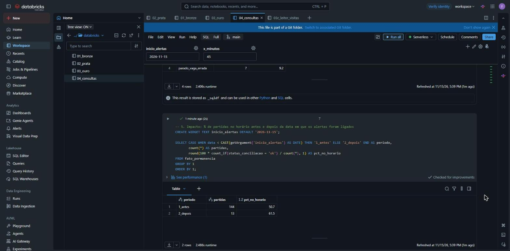
Interpretação: antes dos alertas (13 e 14/11), 50,7% de 144 partidas saíram no horário. Depois (15/11), foram 61,5% de 13 partidas, uma diferença de 10,8 pontos percentuais. A direção é a esperada, mas o período "depois" tem só 13 partidas, e a portaria e a escala são simuladas. Então o resultado mostra como o indicador de impacto da ficha técnica é medido, e não prova que os alertas causaram a melhora. Para isso seriam necessárias algumas semanas de operação real antes e depois.
O pipeline coleta dados reais do problema de hora em hora, sem token no código, com tarefas em paralelo, verificação de chegada e notificação de falha. No Databricks, a Bronze é incremental e idempotente (o COPY INTO não recarrega arquivo já lido), a Prata aplica tipos, três regras de qualidade com contagem e MERGE pela chave, e a Ouro entrega um modelo estrela com o dado pessoal protegido por SHA-256.
O resultado chega ao cidadão pela fato_permanencia, que o MVP publica no Azure e mostra ao controlador na seção "Permanência no pátio". Com ela, o controlador sabe quais ônibus estão no pátio, há quanto tempo e quais viagens ainda não saíram, o que reduz o tempo para localizar um veículo e ajuda a aumentar a porcentagem de partidas no horário (ODS 11.2).
Limitações e próximos passos: a portaria e a escala são simuladas porque não temos acesso a uma garagem real. Numa operação de verdade, elas viriam do sistema da garagem e da cancela (Smart Bus Gate), e a subida ao Volume seria automática, com Auto Loader e um Databricks conectado ao Airflow.